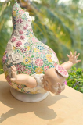

|  | 作品名稱 | 雲童-春之初生Yun Tong: A Newborn in Spring |
| 作者 | 吳榮Wu Rung | |
| 年代 | 2015 | |
| 尺寸 | 52 × 47 × 33 （單件） | |
| 作品說明 | 五十歲月流年，忽然發現我所呈現的作品概念就是「時光流逝，世事變換」。於是，將佛陀的前身「雲童」帶入創作，藉此重新詮釋我五十歲的新生命，此四件作品，以兒童的臉結合雲朵成為雲童，希望觀眾能像兒童一樣「無憂無慮」，像雲一樣「無拘無束」，實乃修行的最高境界。 雲童臉部的表情以人生的幼、青、壯、老來呈現，身體則是以春夏秋冬四季風景來表現。雖是創新的作品，但仍保留交趾陶傳統的元素。「雲童」兩旁的浮雕就像「壁堵」，以雕刻的方式來形塑凹凸陰陽的對稱。另外四季的主色「胭脂紅—春」、「翡翠綠—夏」、「帝王黃—秋」、「水晶藍—冬」展現作品以個別用色的獨特性，散發出交趾陶寶石般繽紛的釉色。 素燒溫度:1160℃，窯燒溫度:850℃~860℃，材質:寶石釉。 |